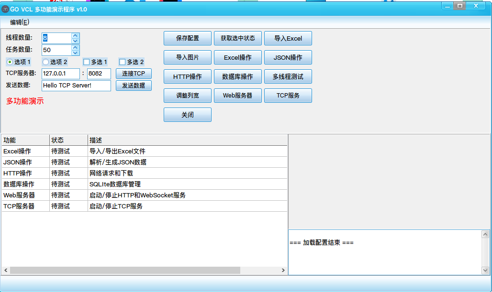

基于Go语言和Govcl UI框架开发的功能丰富的Windows桌面GUI应用程序，集成了Excel处理、JSON操作、HTTP请求和数据库管理等多种功能
导入导出xlsx格式文件，支持批量数据处理，提供直观的表格编辑界面
解析、验证和格式化JSON数据，支持JSONPath查询，提供语法高亮显示
支持GET/POST/PUT/DELETE请求，文件下载和自定义请求头，实时查看响应
完整的SQLite数据库管理，支持CRUD操作，提供可视化数据管理界面
导入并显示多种格式的图片，带美观边框效果，支持图片缩放和旋转
内置TCP服务器和Web服务器，支持多客户端连接，提供RESTful API接口

最简单的安装方式是直接下载预编译的可执行文件：
如果您想从源码构建应用程序，请按照以下步骤操作：
高性能、类型安全的编程语言
跨平台的VCL GUI框架
轻量级嵌入式数据库
高性能Excel文件处理库
高效JSON解析库
简洁易用的HTTP客户端库